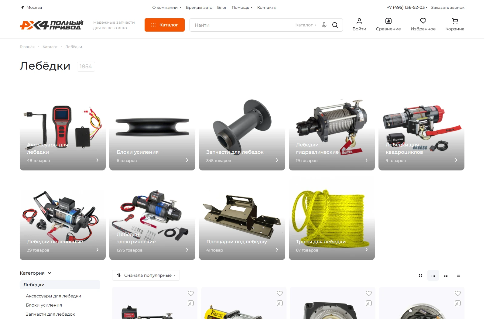
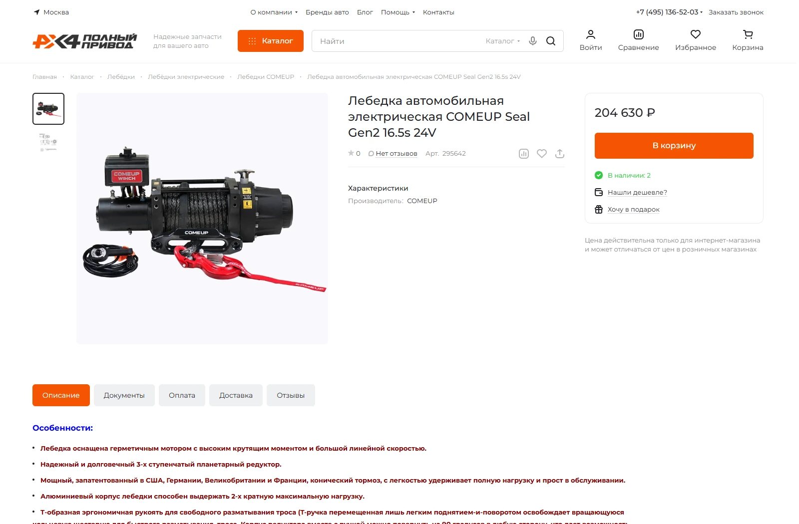
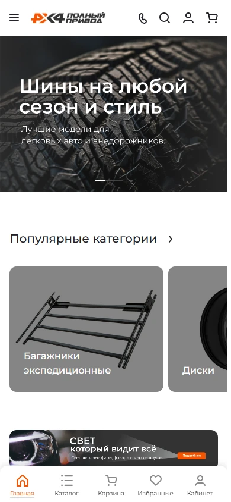

Магазин, который должен расти вместе с бизнесом
«Полный привод» продаёт запчасти, аксессуары и оборудование для внедорожников — от подготовки к бездорожью до путешествий и экспедиций. На прежнем сайте было около 2 000 товаров.
Для развития требовалась система, которая справится с растущим ассортиментом, несколькими поставщиками и разными каналами продаж. Мы объединили брендинг, разработку магазина и автоматизацию товарных данных в одном проекте.
Для покупателя
Быстро найти нужное оборудование, сравнить характеристики и оформить заказ.
Для команды магазина
Расширять ассортимент и обновлять данные без пропорционального роста ручной работы.
Визуальный характер «Полного привода»
Разработали индивидуальный брендбук: палитру и принципы визуальной коммуникации. В основе — движение, свобода и готовность преодолевать препятствия.
Насыщенный оранжевый выделяет важные элементы интерфейса. Серые и графитовые оттенки поддерживают технический характер бренда и оставляют товары в центре внимания.
Акценты и действия
Характер и контраст
Нейтральная основа
Готовая основа — индивидуальная реализация
За основу взяли уже имеющееся у клиента решение Astra Premier на 1С-Битрикс. Адаптировали его под бизнес-процессы компании и доработали сценарии покупки.
- Каталог и поиск
- Категории и подкатегории, доработанные поиск и фильтрация помогают ориентироваться в большом ассортименте.
- Карточка товара
- Изображения, описания и характеристики дают информацию для выбора оборудования.
- Покупка и личный кабинет
- Реализовали корзину и оформление заказа, доработали личный кабинет покупателя.
- Адаптация и производительность
- Адаптировали интерфейс для разных устройств и провели работы по оптимизации скорости сайта.






От 2 000 до 10 000+ товаров
Ассортимент вырос более чем в пять раз. При таком объёме ручная загрузка карточек и фотографий становится отдельной постоянной работой. Мы разработали три независимых скрипта, которые помогают наполнять и поддерживать каталог.
Три механизма вместо постоянного ручного наполнения
Сбор данных поставщиков, мониторинг новинок и обновление фотографий работают как отдельные процессы.
- 01. Сбор товаров поставщиков
- По расписанию скрипт собирает и обрабатывает описания, характеристики и изображения с нескольких сайтов поставщиков. Отдельно проработали корректность загрузки и обработку исходного контента.
- 02. Мониторинг новинок
- Каждые две недели система проверяет источники поставщиков, находит новые позиции и обеспечивает их добавление в каталог.
- 03. Обновление изображений
- Отдельный скрипт повторно получает и обновляет фотографии. Для исправления изображений не нужно заново загружать все данные о товаре.
Двусторонний обмен с разделением задач
Стандартная схема, в которой 1С полностью управляет каталогом, не подходила. Товарный контент собирается из нескольких источников, и сайт участвует в его формировании. Поэтому реализовали гибридную архитектуру обмена.
1С → Интернет-магазин
Наименования товаров, актуальные цены и остатки продукции.
Интернет-магазин → 1С
Товарные карточки и свойства, описания, характеристики, изображения, заказы и данные покупателей.
1С отвечает за актуальность учётных данных, а сайт — за расширенный товарный контент и заказы. Так автоматизированное наполнение каталога связали с учётной системой клиента.
Выгрузка учитывает вложенность каталога
Использовали готовый модуль для 1С-Битрикс, но его стандартных возможностей оказалось недостаточно для многоуровневого каталога.
Проанализировали вложенность разделов и доработали логику выгрузки. Модуль включает нужные категории и подкатегории и формирует файл с товарными предложениями для Авито. После доработки проверили корректность работы механизма.
18,5 месяца — от старта до запуска
Проект начался 12 марта 2025 года. Разработка, настройка интеграций и проверка нестандартных сценариев шли в постоянном контакте с заказчиком.
- Регулярная связьПроводили рабочие созвоны, обсуждали задачи и согласовывали решения. Менеджер проекта оставался постоянной точкой контакта.
- Понятные технические решенияОбъясняли логику интеграций, ограничения и дальнейшие шаги, чтобы клиент мог участвовать в принятии решений.
- Совместное тестированиеПроверяли реальные сценарии обмена, исправляли выявленные ошибки и повторно тестировали результат.
- Запуск 30 сентября 2026 годаПосле проверки пользовательских сценариев и основных механизмов сайт открыли для индексации поисковыми системами.
Основа для дальнейшего роста магазина
- Ассортимент
- Более 10 000 товаров вместо примерно 2 000 на предыдущем сайте — рост более чем в пять раз.
- Автоматизация
- Три собственных скрипта помогают загружать товары, находить новинки и обновлять фотографии.
- Связанные системы
- Поставщики, интернет-магазин, 1С и Авито объединены процессами получения и передачи товарных данных.
- Бренд и интерфейс
- Индивидуальная визуальная идентичность и адаптивный магазин с каталогом, поиском и оформлением заказов.
Клиент получил магазин, в котором расширение ассортимента поддерживается автоматизацией, а товарный контент связан с учётной системой и выгрузкой на Авито.